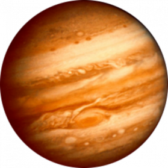

| Neptune | Earth | Saturn | Jupiter | |
|---|---|---|---|---|
|
|
|
 | |
| Mass (kg) | 1.02x1026 | 5.98x1024 | 8.68x1025 | 1.90x1027 |
| Diameter (km) | 49528 | 12756 | 51118 | 142,800 |
| Mean density (kg/m3) | 1640 | 5520 | 1290 | 1314 |
| Escape velocity (m/s) | 23300 | 11200 | 21300 | 59500 |
| Avg Dist from Sun | 20.07 AU (4,498,252,900 km) | 1 AU (149,597,890 km) | 19.19 AU (2,870,972,200 km) | 5.204 AU (778,412,020 km) |
| Rotation period (length of day in Earth days) | 0.67 (19.1hours) | 1 (23.93 hours) | 0.72 (17.9 Earth hours)(retrograde) | 0.41 (9.8 Earth hours) |
| Revolution period (length of year in Earth days) | 60,190 (164.8 Earth years) | 365.26 | 30,685 (84 Earth years) | 11.86 |